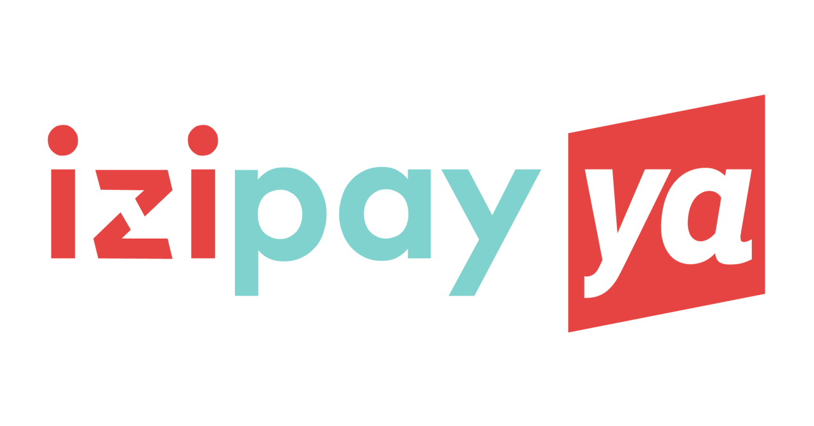
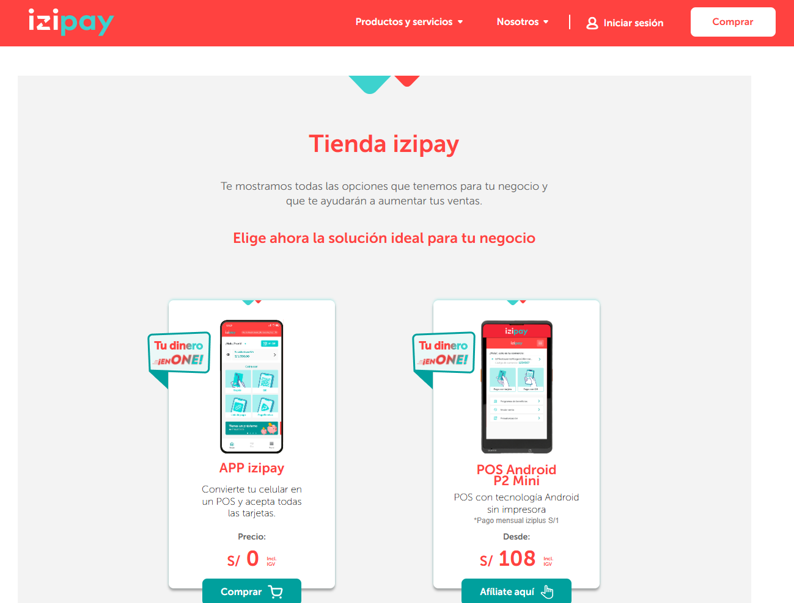
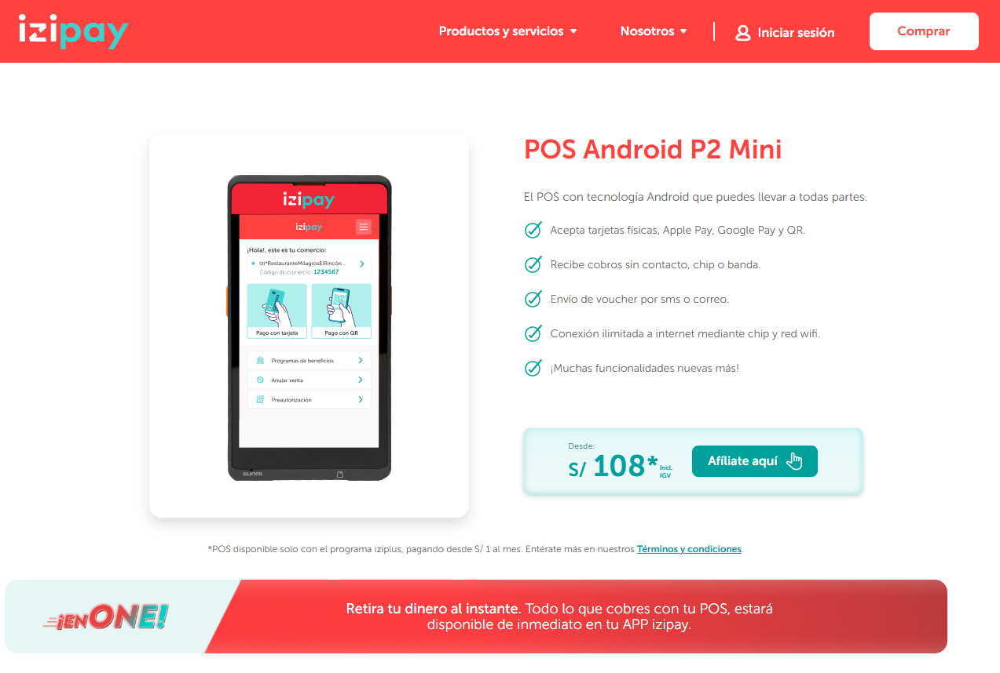

IziPay Ya – Integración de Pagos
Cliente: Interbank / NTT DATA ·
Año: 2023 ·
Rol: Backend Developer – Microservicios y Arquitectura

Contexto
Interbank buscaba modernizar y acelerar el procesamiento de transacciones
digitales para su ecosistema de pagos con IziPay, permitiendo que
comercios y usuarios pudieran realizar cobros en línea de manera más
segura, estable y escalable.
El sistema previo presentaba problemas de latencia, baja observabilidad y
alta dependencia entre componentes, causando demoras en conciliaciones,
riesgos operativos y dificultades para auditar transacciones.
Solución Implementada
La solución consistió en una plataforma de microservicios diseñada bajo
principios de Arquitectura Hexagonal, desacoplando completamente
la lógica de negocio de las integraciones externas y permitiendo una mayor
resiliencia frente a fallos.
- Creación de microservicios REST para autorización, reversas y conciliación.
- Integración directa con servicios de IziPay mediante adaptadores de infraestructura.
- Uso de MongoDB para persistencia flexible y de alto rendimiento.
- Envío de eventos de auditoría a Kafka para trazabilidad en tiempo real.
- Automatización del despliegue con Azure DevOps + pipelines CI/CD.
- Monitoreo avanzado usando New Relic (APM, logs y distribuidos).
Esta arquitectura permitió aislar fallos, reducir dependencias y aumentar
la velocidad de desarrollo de nuevas funcionalidades.
Tecnologías Utilizadas
- Java 17 · Spring Boot 2/3
- Arquitectura Hexagonal / Ports & Adapters
- MongoDB / Redis
- Kafka para eventos financieros
- Azure DevOps + Pipelines CI/CD
- New Relic para observabilidad
- REST APIs / Integración con gateways externos
Resultados Clave
La implementación logró mejoras significativas en desempeño y estabilidad:
- Reducción del tiempo de procesamiento por transacción en más del 50%.
- Incremento de disponibilidad a niveles cercanos al 99.9%.
- Mayor control operativo gracias a logs distribuidos y trazabilidad en tiempo real.
- Resiliencia frente a picos de carga mediante una arquitectura desacoplada.
- Facilidad para incorporar nuevos medios de pago y flujos futuros.
Mockups del Proyecto
A continuación, una muestra representativa del flujo de integración, dashboards
de monitoreo y simulaciones del proceso de pago (sin información sensible).


← Volver a proyectos